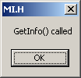

Answers to questions and solutions to problems that have come up.
A: Goto #buze of EFNET with your IRCclient (like mIRC), we will be there .
A:Hit F1 to show the keyboard shortcut overview for the focused view. Hit F1 twice to see global keyboard shortcuts.
A: Remember, hitting ESC will always take you back to the main/default pattern.
A: Add a 'Pattern Player'-machine. Go to the patternformat editor (shift-F2), and tick the 'Trigger' checkbox of the 'Pattern Player'-machine. A column appears, and if you enter '00', a nested patternblock will appear. Hit enter to enter the pattern, and ESC to leave. Once you are inside your nested patternblock, you can hit shift-F2 again to add columns to it.
A: Rightclick the master (or any machine), and choose 'Render To'. From there you can render the machine's output to a file, or a wave in the wavetable.
A: You forgot to connect a 'Note Generator'-machine to it. By doing so, you will also be able to send notes to your plugin in the patterneditor. Optionally a 'MIDI Tracker' can be used. Remember it once, and you're done.
A: Yes, theoretically, although the programs have grown apart to such as a degree it may be considered beneficial to maintain two installations.
A: Unpack the zip, add plugins and start buze.exe. Check out the documentation for the individual plugin wrappers on how and where to install plugins.

A: This message appears when Paniq's Plutonium is initialized. While it is a harmless message, this machine is defunct and can safely be deleted.
A: You might have (an older version of) Gear/Generators/CyanPhase Buzz Overloader.dll. Please delete it - Buzé will not work when it is there.
A: Unless you started Buzé with a /debug parameter, this window appears when Paniq's Pybuzz is initialized. Whenever Pybuzz is used, it will print debug messages and other output to this window.
A: Buzz and Buzé normally crashes on startup for the same reason: unstable machines. While we have attempted to put the most well-known broken machines in blacklist.txt, you will occasionally need to track down unstable machines by yourself. Use a tool such as Dependency Walker or buze.exe /debug to help finding problem DLLs. If you encounter a machine that you think ought to be placed in the blacklist, please let us know by logging a bug report.
Known startup problems:
A: You are apparently using a broken machine. Don't do that. Find out which machine causes the noise and delete it. If you encounter a machine that causes noise bursts, please let us know by logging a bug report.
A: Yes. Buzé now supports VST and VSTi natively, with access to most parameters and features directly. By default, plugins are loaded from Gear/VST, but this can be changed in Preferences -> Plugins -> VST Paths.
Buzé also supports VSTs through the Buzz wrapper: The Polac VST plugins enable both VST and VSTI. Make sure you have latest version though.
First make sure you have all DLLs the machine needs. Some machines use runtime libraries from Visual Studio, such as msvcp60.dll, msvcrt.dll and these must exist on your system, either in Buzés program folder or in c:\windows\system32.
Polac VST & Polac VSTi:
All WaveOut/WaveIn machines, Jeskola/Polac ASIO In/Out machines:
These machines depend on functionality in Buzz' native wave output drivers, which are not available in libzzub.
Use the built-in Audio Input and Audio Output plugins instead.
BTDSys PeerCtrl, BTDSys PeerCtrl 'Basic', BTDSys LiveJumpHACK:
These machines use known offset hacks and were attempted patched, but caused the wrapper to fail altogether. Therefore, they
are currently blacklisted as they will cause trouble no matter what.
ld mixer:
Please see the separate ld mixer 1.03 checklist page.
Please report any problematic VSTs in our bugtracker. Our VST wrapper is a work in progress.
A: No, most likely not. The Buzz machine wrapper patches several known hacks to prohibit crashes.
For a list of the currently patched plugins, have a look at Gear/Native/buzz2zzub.ini, which controls patching options per DLL. The .ini-file has some documentation, which shortly explains the purpose of each patch option. Patched plugins are probably safe to use, although if their core functionality is based on hacks they may not (yet) function properly.
If you are a machine author using hacks in your Buzz machine (not recommended), make sure the supported patches are enabled in buzz2zzub.ini for it to work as expected in Buzz. The wrapper does not support any direct GUI-hacks, such as responding to correct window messages, but instead focuses on the memory offset hacks used by several popular plugins.
A: The one place to keep bug reports and feature requests is in the ticket database. To enter tickets, you will need a Sourceforge account.
A: The libzzub/Buzé project owns a Buzzlib license, which was aqcuired mainly to distribute binaries legally. None of the buzzlib code has been used in libzzub or Buzé. Unfortunately the overall licensing scheme is quite messy. Buzé is released under the same license as WTL. libzzub is LGPL, which means you can use the replayer engine in a commercial project as long as any changes you make to libzzub are returned to the community.
libzzub uses a Buzz-wrapper to provide support for original Buzz machines. The wrapper is GPL-licensed, except Oskaris original headers which have the following notice:
// This header file may be used to write _freeware_ DLL "machines" for Buzz // Using it for anything else is not allowed without a permission from the author
I am not a lawyer, but I think you should talk to Oskari if you want to use libzzubs Buzz-wrapper commercially.
A: Aldrin, Buzé, Buzz RMX and Neil are different Buzz clones with entirely different design goals. All four are based on different versions of the same replayer engine.
libzzub is the name of the replayer engine originally split off from an early version of Buzé. Later libzzub went through a major rewrite and renamed to Armstrong. Armstrong has gone through yet another major rewrite since then.
Aldrin is a successor of Jeskola Buzz developed mainly on and for the Linux operating system.
Buzé is a modern remake of Jeskola Buzz for Windows.
Buzz RMX is a 1:1 remake of Jeskola Buzz for Windows. It is forked from an an earlier version of Aldrin and is intended as a pick-up point for developers that want to tweak and extend the original Buzz user interface.
Armstrong is an open source platform independent C/C++ music tracking and sequencing library.
Neil is an active open source fork of Aldrin.
libzzub is the former name of Armstrong. The "zzub" prefix is often seen in the source code still.
A: It's pronounced with a french accent, preferably in a slightly gay tone. Try yourself: Buh-zeh, buh-zeh, buh-zeh.